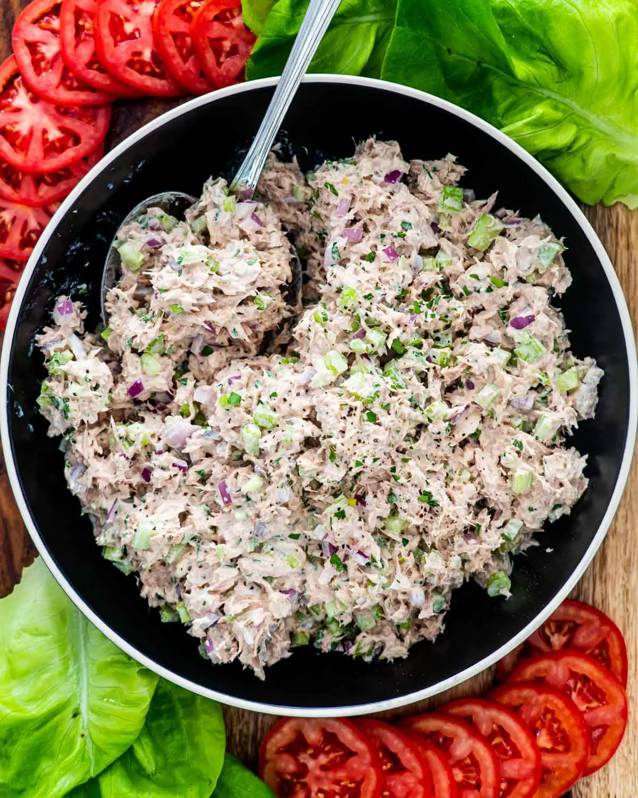

Tuna Salad

Description
A crunchy tuna-salad, perfect for sandwiches or dips
You Will Need
Ingredients
- Can of Tuna
- 1/2 Cup Celery, diced
- 1/2 Cup Onion, diced
- 1/2 Tsp Yellow Mustard
- 1 Tbsp Dill Relish
- 1.5 Tsp Sweet Relish
- 1/4 Tsp Dill Weed
- 1/4 Tsp Prepared Horseradish
- Dash of Lemon Juice
- Salt and pepper, to taste
- 1/4 cup Mayonnaise (or similar)
Steps
- Drain the can of tuna thoroughly
- Add all the ingredients except the Mayonnaise, combine thoroughly
- Add Mayonnaise until it just comes together. Leave the salad fairly dry unless it's being served as a dip.
- If you're serving it as a dip (great with Fritos Scoops), add the rest of the mayonnaise.
- If you're serving it as a sandwich filling, serve the additional mayonnaise on toasted bread instead.